Github#
This handbook is hosted on GitHub and built with Jupyter Book. This page explains how the repository is structured and how you can contribute or reuse the content.
Note
This handbook is licensed under CC BY 4.0 — you are free to use, adapt, and build upon it, as long as you give appropriate credit.
What is GitHub & What is a Repository?#
GitHub is a platform for hosting and collaborating on code and text files. A repository (or “repo”) is essentially a folder that contains all the files of a project; in this case, all the pages, images, and configuration files that make up this handbook.
How is this Handbook Structured?#
The repository contains several configuration files and folders. Here, we focus on the parts most relevant for editing and adding content:
act-lab-handbook/
├── lecture/
│ ├── _toc.yml # Table of contents
│ ├── _config.yml # Book configuration
│ ├── index.md # Start page
│ ├── static/ # Images and other files
│ └── content/ # All handbook pages
│ ├── vacation.md
│ ├── wifi.md
│ └── ...
How to Contribute or Reuse#
Option A: Collaborate on the Repository#
If you would like to contribute directly to this handbook, get in touch with the person currently maintaining the repository. They can add you as a collaborator, giving you direct access to edit files in the repo.
First, you will need to create an own Github account.
Then, the maintainer goes to the repository on GitHub and clicks on Settings. On the left, click on Collaborators, then “Add people”.
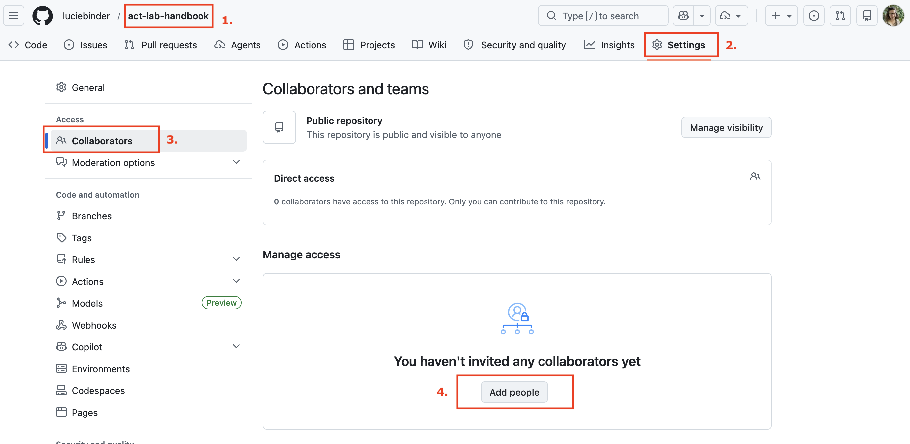
Lastly, they enter the username, name, or email address and click on Add to repository.
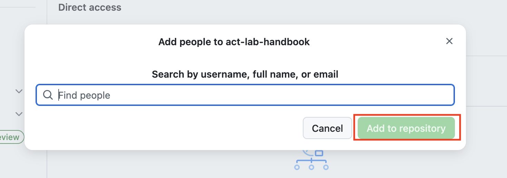
Option B: Fork the Repository#
If you would like to create your own version of this handbook, you can fork the repository. This creates an independent copy under your own GitHub account that you can freely adapt.
Make sure you are in the Code section of the repository. Then click on Fork.
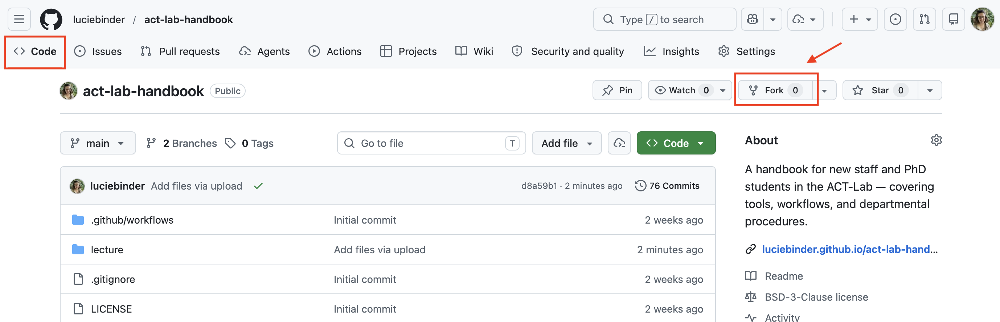
Choose your account, add a name for the repository, and optionally a description. Then confirm.
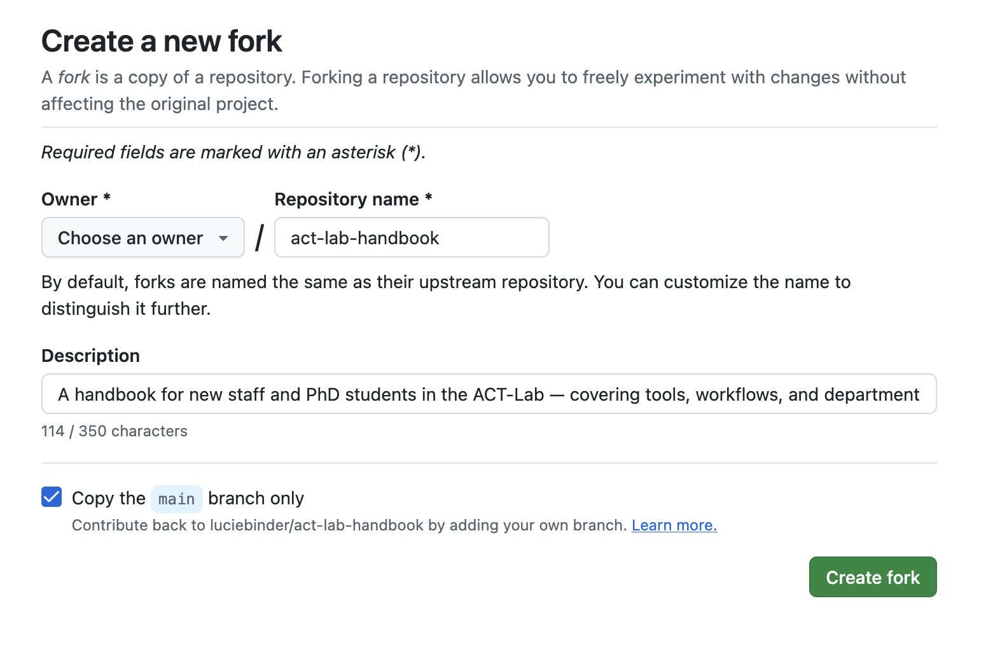
Tip
Forking is a great option if you want to build your own version of a lab handbook based on this one. This is exactly what open educational resources (OER) are for!
Adding and Deleting Pages#
Adding a Page#
Create a new
.mdfile in thecontent/folder.a) Navigate to the
content/folder and click “Add file” in the upper right corner.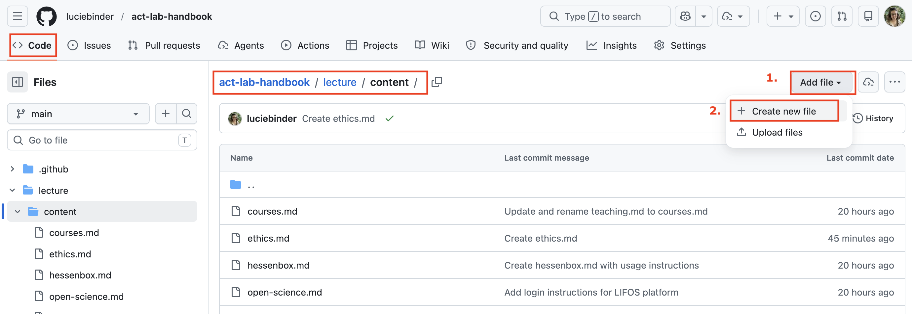
b) Enter a name for the file at the top — don’t forget to add the
.mdextension so it is recognised as a Markdown file.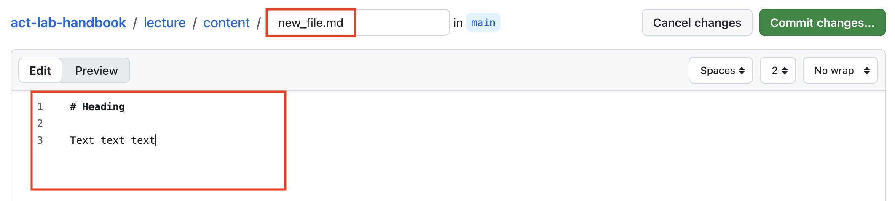
c) Once you are happy with your changes, click Commit.
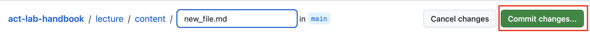
d) Add a short title and description for your changes — this helps you and collaborators keep track of what was changed and why.

Add the new page to
_toc.ymlin the appropriate section.a) Navigate to the
_toc.ymlfile and click the pencil icon in the upper right corner to edit the file.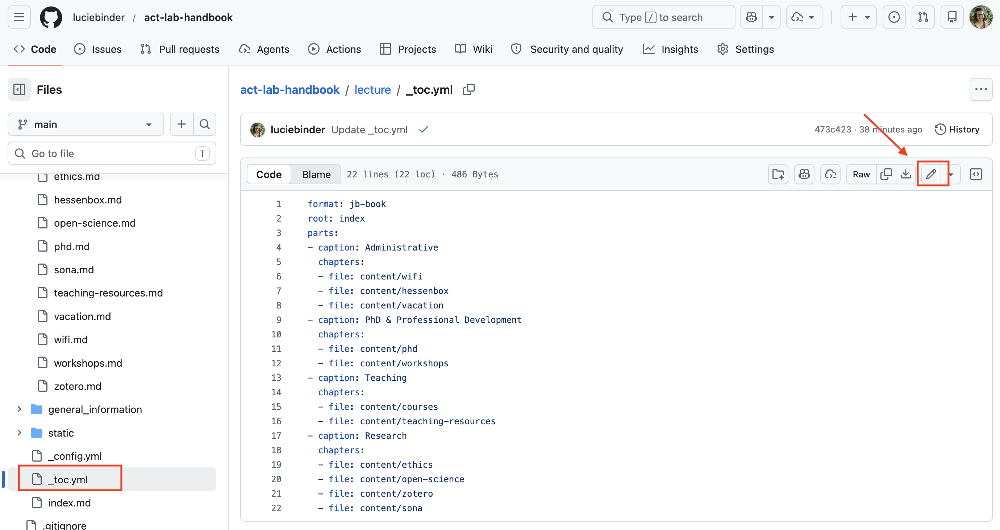
b) Add the path to your new file in the appropriate section.
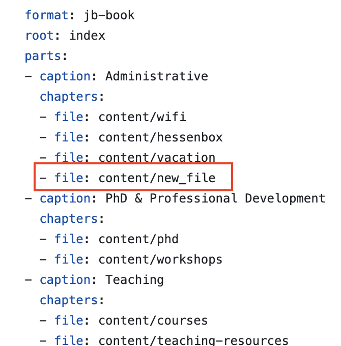
Deleting a Page#
Delete the
.mdfile from thecontent/folder. Navigate to the file, click the three dots in the upper right corner, and select “Delete file”. Then, click on Commit.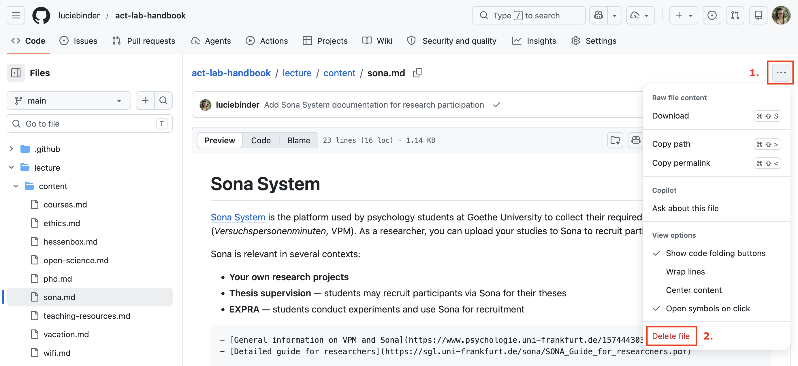
Remove the corresponding entry from
_toc.yml— follow the same steps as above to edit the file.
Formatting with Markdown#
All pages in this handbook are written in Markdown. For a quick reference, see the official Markdown Guide. For a tutorial directly applicable to this setup — using Markdown in Jupyter Book — see this guide from the OER course this handbook was built with.
Publishing — Pushing to the Website#
Once you make changes and commit them to the main branch, GitHub Actions automatically builds and deploys the updated handbook to GitHub Pages — no manual steps needed.
To check the status, click on Actions at the top of the repository. You will see a list of recent workflows.
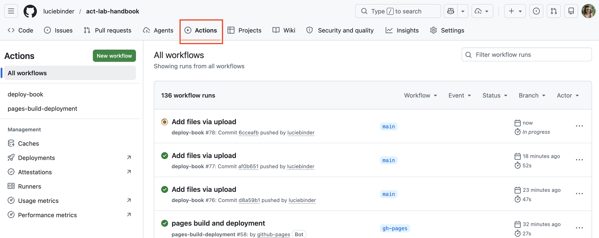
Green — the handbook was built and deployed successfully
Red — something went wrong. Click on the workflow to see the error message and find out what needs to be fixed.
License & Reuse#
This handbook is licensed under the BSD 3-Clause License. You are free to use, adapt, and build upon the content, as long as you give appropriate credit and retain the license notice.
See also
This handbook was created with the help of the online course Creating OER with Jupyter Book — a great resource if you’d like to build your own.